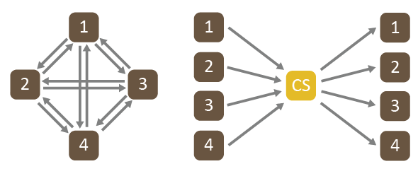

通常需要沿着图像流水线在颜色空间之间进行多次转化。例如，可能需要将来自不同空间的几个输入转化为通用工作空间，以便可以合成和融合它们，然后将它们转化为另一个空间用于输出。 Autodesk 颜色管理使用连接空间执行这些转化。
什么是连接空间？
连接空间是中间颜色空间，用于最大程度地减少从每个颜色空间转化为所有其他颜色空间所需的不同颜色变换的数量。

例如，若要在 4 个颜色空间之间直接来回转化，将需要 12 个不同的变换。如果添加第 5 个颜色空间，则需要再添加 8 个变换，也就是总共 20 个变换。通常，添加第 N 个空间，则需要另外添加 2(N – 1) 个变换，也就是总共 N2 – N 个变换。
但是，对于连接空间，仅需要 8 个变换即可在 4 个颜色空间之间来回转化。每添加 1 个颜色空间只需要添加 2 个变换，也就是总共 2N 个变换。但请注意，现在每个转化需要两个步骤：首先从源空间转化为连接空间，然后从连接空间转化为目标空间。
Autodesk 颜色管理中的连接空间
在应用程序中的颜色空间之间转化时，Autodesk 颜色管理在后台使用连接空间。
如果需要
手动指定自定义变换链，该集合包括一些变换，允许您使用两个连接空间之一在颜色空间之间来回转化：
- ACES 2065-1 可用作场景线性图像的连接空间。
- camera/ 目录包含用于从各种数字摄影机格式转化的变换。
- film/ADX/ 目录包含用于在 Academy Density Exchange 格式与其他格式之间来回转化的变换。
- interchange/ACESproxy/ 目录包含用于与在现场使用的 ACESproxy 系统进行转化的变换。
- RRT+ODT/ 目录包含用于与各种输出相关的空间进行转化的变换。
- CIE XYZ 可以用作输出相关图像（即不需要任何色调贴图的图像）的连接空间。集合中的变换包含与 CIE XYZ D65 白点进行转化必需的任何色度调整（如有需要）。
- display/ 目录包含用于针对特定显示设备与各种 RGB 颜色空间编码进行转化的变换。
- interchange/ 目录包含用于与通常用于数字图像交换的颜色空间（包括 sRGB 和 AdobeRGB）进行转化的变换。
注： primaries/ 目录下的变换仅转化主颜色。这些变换需要并生成线性颜色空间编码，而且可以应用于场景线性或输出线性值。